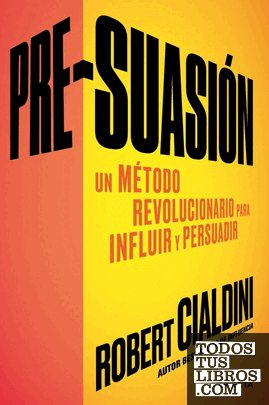

Pre-suasiónRobert Cialdini

Pre-suasión
Robert Cialdini
Cómo lo que ocurre justo antes de un mensaje determina si nos convence, y el uso ético de esa influencia.
- Publicado originalmente
- 2016
- Enfoque
- Divulgación científica
- Para quién
- Público general
- Ficha bibliográfica
- Todos tus libros (CEGAL)
Este libro tiene derechos de autor, así que no lo alojamos. Te dejamos la ficha para que sepas de qué trata y lo busques en una librería o biblioteca.
Conducta interpersonal e influenciaTácticas de influenciaComunicación, medios y creenciasPersuasión y cambio de actitudes